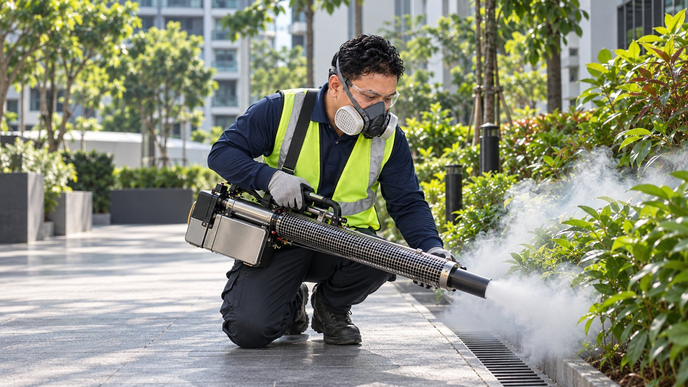
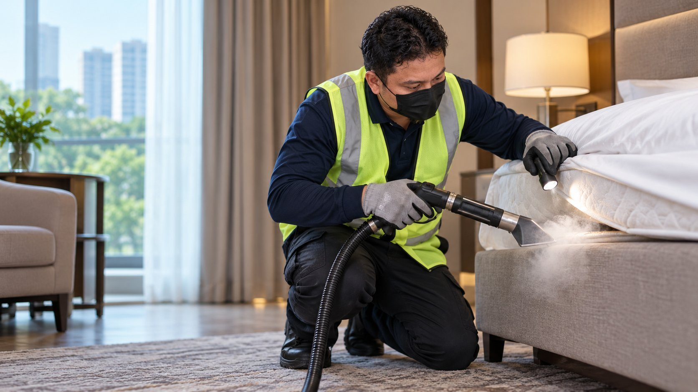
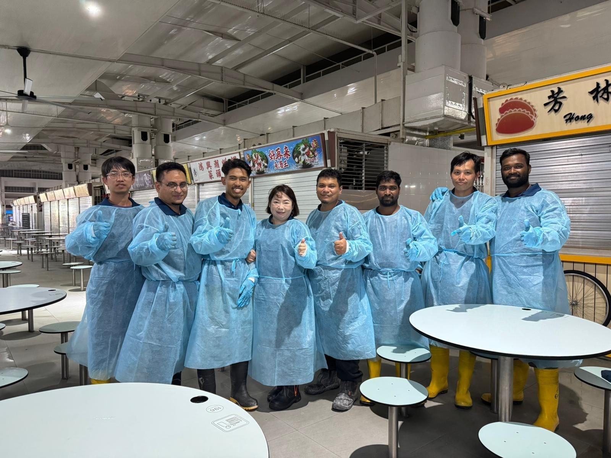
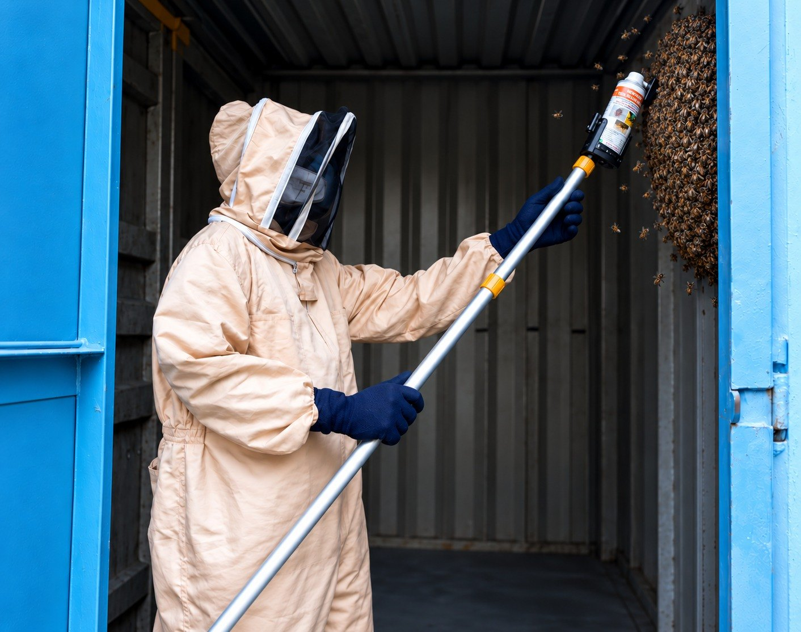
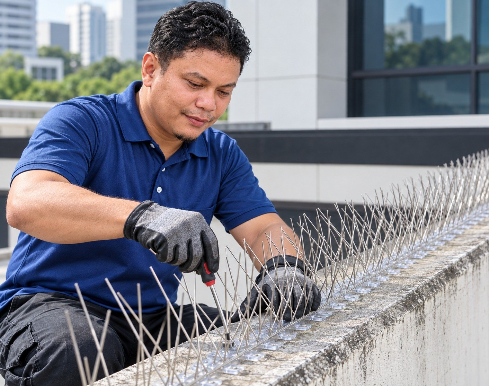

Mosquito Pest controlMosquitoTargeted mosquito-control solutions designed to address both adult mosquitoes and potential breeding sources.Learn more
Bedbug Pest controlBedbugTargeted bedbug treatment designed to address active infestations and help prevent recurrence.Learn more Cockroach Pest controlCockroachEffective cockroach treatment for homes and businesses, with solutions tailored to the level and location of infestation.Learn more Rodent Pest controlRodentRodent management solutions focused on controlling activity and identifying potential entry and harbourage points.Learn more
Disinfection Pest controlDisinfectionProfessional disinfection services designed to help reduce harmful microorganisms on surfaces and high-contact areas.Learn more
Bee Treatment Pest controlBee TreatmentSafe treatment and removal of bee and hornet nests by trained technicians.Learn more
Bird Spike Pest controlBird SpikeHumane physical deterrents that stop birds landing, roosting and nesting on exposed surfaces.Learn moreOnce the plan is confirmed, our team will implement the recommended pest management measures, target the source of the infestation, treat affected areas, and arrange follow-up monitoring to help provide lasting protection.